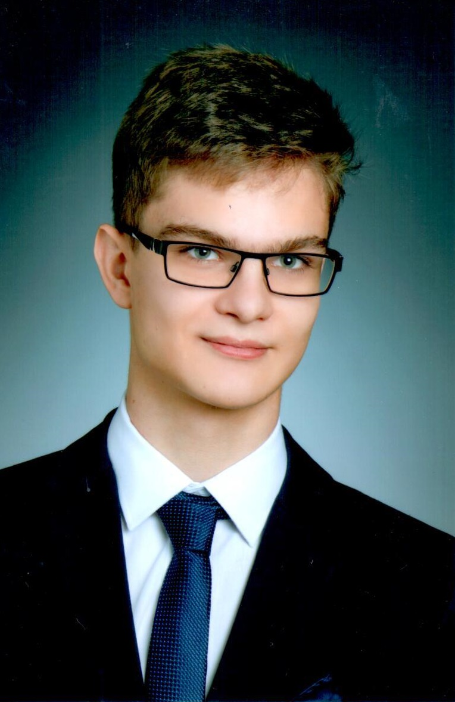

Kiss Gábornak hívnak és a Budapesti Műszaki és Gazdasági Egyetem gépészmérnöki hallgatója vagyok. Születésemtől kezdve teljesen Tápiószentmártonban nevelkedtem, egészen az általános iskola elvégzéséig. Ekkor Szolnokra kerültem a jelenlegi Szolnoki SZC Jendrassik György Gépipari Technikum névre hallgató akkor még szakgimnáziumába CAD-CAM informatikusnak tanulva. Innentől nem csak otthon, hanem a Tiszaparti kollégiumban is éltem az életemet. A szakgimnáziumot elvégezve a Budapesti Műszaki és Gazdasági Egyetemre jelentkeztem, ahova fel is vettek. |
 |